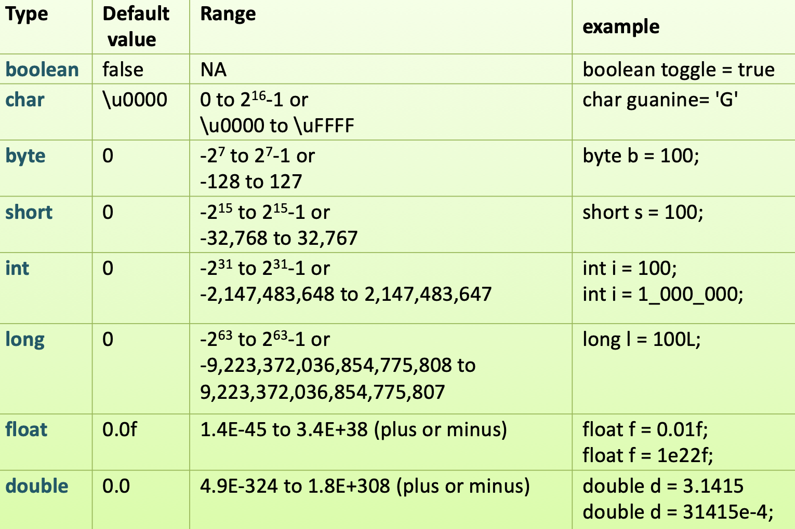
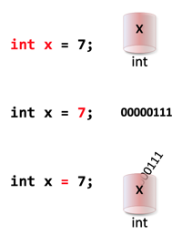
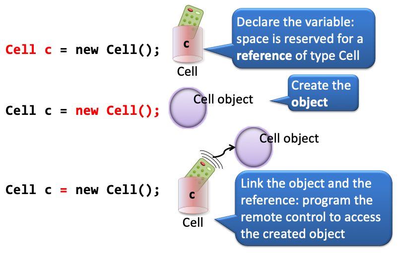

Data Types
Data forms the state of an object. They define the properties that define how it will behave through methods. As stated before, Java is a strongly typed language. That means every variable, method parameter and method return type needs to have a declared type. These types can be primitives or reference types. This post deals with both, and with the "behavioral" differences between them.
Primitives
In essence, every programming language knows about the same data types: integers, floats, booleans, Strings. Java is no different. However, there are a few major distinctions. First, you need to declare the type of every variable. Also, conversion between them usually needs to be done explicitly. Finally, for memory efficiency reasons, there are "subtypes" of integers and floats. Floating-point numbers for instance (numbers with a decimal part), can be represented by the float type ("floating point number) or the double ("double-precision floating point number") which takes twice as much of memory. You have to realise Java was first launched in the 1990s, when memory was a scarce and valuable asset in a computer...
Here are all the primitive types:

The three steps of primitive type creation are these.

First, a variable of a certain type is declared. A memory slot of the appropriate size is reserved. Then the bit-pattern representing the declared value is created and put into the memory slot. Finally the variable is "coupled" to the memory slot.
Here is some demo code where some of these types are used.
class JavaTypesDemo {
public static void main(String[] args) {
/* INTEGER counts the number of kills */
int killCount = 42;
/*BOOLEAN for yes/no variables; indicates alive status*/
boolean alive = false;
/*DOUBLE for floating point values; indicates the average number of kills per life cycle*/
double killAverage = 10.55;
/*CHARACTER for single letter values;
stores mode of the game 'N'=No mercy 'S'= Sissy*/
char playmode = 'N';
/*STRING for text values; the name of the player*/
String player = "ZZZZZombie";
System.out.println("player = " + player);
System.out.println("alive = " + alive);
System.out.println("play mode = " + playmode);
System.out.println("kill count = " + killCount);
System.out.println("kill average = " + killAverage);
}
}
This will output
player = ZZZZZombie
alive = false
play mode = N
kill count = 42
kill average = 10.55
In the above example, all variables were declared and initialized in one statement, but it is allowed to split this up. The only thing that is illegal (not compilable) is to leave a declared variable uninitialized and access it:
//LEGAL
int killCount;
killCount = 0;
//ILLEGAL; not initialized
int livesLived; //no compile error here
System.out.println("livesLived = " + livesLived); //but here!
When combining primitives in mathematical operations, they usually behave as expected. However, when you start combining them in a "mixed" environment, it becomes a bit tricky. The general rule is it is always safe to "up" the precision or keep it equal, but dangerous to "lower" the precision. For that reason, lowering the precision needs to be done explicitly, through a (type) cast. Here are a few examples using primitives.
int x = 10;
int y = 20;
int squareSurface = x * y; //200
No problem here. Two ints combine to a new int. Precision stays the same. In the next example, the Math class is
used in two ways. Math.PI is a constant and Math.pow() is a function. Both are used to calculate the surface area of a circle:
double circleSurface = Math.PI * Math.pow((0.5 * x), 2); //78.53981633974483
Note that an int, x is used in a double context (0.5 * x) without any problem. The int is "upped" in precision to a double. Whenever an int is used in conjunction with a double, it is automatically cast into the higher-precision type (more on casting later). But in the next snippet,
double division = x / y;
System.out.println("division = " + division);
the output is, slightly unexpected
division = 0.0
Can you explain?
Two ints were divided (x / y or 10 / 20), resulting in an int. Since ints do not have a decimal part,
this is 0. Casting a zero to a double subsequently resulted in 0.0.
How to circumvent this problem? You need to convert one of them in an early stage into a double. Although both would work,
it is more logical to cast the numerator (x) to a double.
double division = (double)x / y;
System.out.println("division = " + division);
//outputs division = 0.5
Because x was cast to a double, y found itself in an operation involving a double. It was therefore automatically cast into a double as well, resulting in a double division.
Here is an example where you are forced by the compiler to cast from double to int.
double ratio = 1.234;
int intRatio = ratio; //DOES NOT COMPILE!
int intRatio = (int)ratio; //LEGAL
Since conversion from double to int has the risk of loss of information (precision), you are forced by the compiler to be explicit about it.
Here are some more esoteric behaviors of primitives, ad cases that are (unexpectedly) illegal:
char nucleotide = 'A';
//allowed, because a char is an 16-bit int under water
System.out.println(nucleotide * 10); //650
System.out.println((char)(nucleotide + 5)); //F
boolean isAlive = true;
//not allowed; although in some languages this works just fine
//System.out.println("isAlive * 10 = " + isAlive * 10);
String name = "Hank";
//surprisingly, this is allowed; the int is automatically converted (not cast!) into a String
System.out.println(name + 10); //Hank10
//not allowed; the * operator does not support these two types as operands
//System.out.println("name * 10 = " + name * 10);
Reference types
In Java, reference types are everywhere; they point to the object instances. Strings, arrays, and every Java class -also the ones you create- represent reference types.
With primitive-typed variables, the value of the variable is simply the value, in bits, but with reference variables, the value of the variable is bits representing a way to get to a specific object (like a remote control)

Creating a reference type variable

Type String
Type String needs some special attention. It is actually NOT a primitive type, although always dealt with alongside them. You could have guessed from the name, which starts with a capital. It is a full-fledged Java class that can be instantiated and that has many nice methods. It is however immutable as in most languages, and has a shortcuts that most other classes do not have: you can create them from a literal. Here is some example usage of class String.
String dnaOne = "AGAGGTCTAGCTGA";
String dnaTwo = "GGTCTAGC";
String dnaThree = "GGtctAGc";
String dnaFour = dnaThree.toUpperCase();
System.out.println("dnaOne - character at position 6: " + dnaOne.charAt(5)); //T
System.out.println("dnaOne contains dnaTwo: " + dnaOne.contains(dnaTwo)); //true
System.out.println("dnaTwo equals dnaThree ignoring case: " + dnaTwo.equalsIgnoreCase(dnaThree)); //true
System.out.println("dnaOne starts with \"AGAGGT\": " + dnaOne.startsWith("AGAGGT")); //true
System.out.println("dnaFour.toCharArray(): " + dnaFour.toCharArray());
//[C@6f3b5d16 but this changes: this is the reference value (the remote control endpoint)
Testing equality (of Strings)
A very common mistake with beginning (and advanced) Java programmers is the way String comparison is carried out.
To test sameness, use ==. This returns true if the variables are the same primitives or point to the same object on the heap.
To test logical equality, use the .equals() method. Strings may be the same in content, but return false when tested for sameness: two distinct string objects on the heap can have the same content.
String dnaOne = "AGAGGTCTAGCTGA";
String dnaFive = new String("AGAGGTCTAGCTGA");
System.out.println("dnaOne equals dnaFive: " + dnaOne.equals(dnaFive));
System.out.println("dnaOne == dnaFive: " + (dnaOne == dnaFive));
outputs:
dnaOne equals dnaFive: true
dnaOne == dnaFive: false
and to make it more confusing:
```java
String dnaOne = "AGAGGTCTAGCTGA";
String dnaSix = "AGAGGTCTAGCTGA";
System.out.println("dnaOne == dnaSix: " + (dnaOne == dnaSix));
```
outputs:
dnaOne == dnaSix: true
And this has to do with String literal caching by the JVM.
A special case: null
There s a special value for reference type variables: the null value. It can be assigned to all Java
reference type variables. This value is used when you want to declare a variable, but don't know a useful default or starting value for it. However, there is great danger lurking when using null values. They are not backed by an object, so when you try to access values on them, or call methods, you get a big fat NullPointerException thrown in your face.
static void nullValueDemo() {
String nullString = null;
//prints just fine!
System.out.println("nullString = " + nullString);
//NullPointerException!
nullString.charAt(0);
}
outputs
nullString = null
java.lang.NullPointerException
at snippets.JavaTypesDemo.nullValueDemo(JavaTypesDemo.java:145)
at snippets.JavaTypesDemoTest.nullValueDemoTest(JavaTypesDemoTest.java:36)
(stack trace continues)
What is the difference?
To be passed around as primitive
Java is pass-by-copy, so to pass a primitive means to pass a copy of it. Whatever happens with the copy has no impact on the original:
static void primitivePassingDemo() {
int x = 42;
System.out.println("x = " + x);
changePrimitiveVariable(x);
System.out.println("x = " + x);
}
static void changePrimitiveVariable(int number) {
System.out.println("number = " + number);
number = 55;
System.out.println("number = " + number);
}
outputs this:
x = 42
number = 42
number = 55
x = 42
To be passed around as reference type
Java is pass-by-copy, so to pass a reference type means to pass a copy of the reference. Now you have two references pointing to the same object on the heap.
static void referencePassingDemo() {
Cell cell = new Cell();
System.out.println("cell.diameter = " + cell.diameter);
changeReferenceVariable(cell);
System.out.println("cell.diameter = " + cell.diameter);
}
static void changeReferenceVariable(Cell theCell) {
System.out.println("theCell.diameter = " + theCell.diameter);
theCell.diameter = 12;
System.out.println("theCell.diameter = " + theCell.diameter);
}
outputs this:
cell.diameter = 5
theCell.diameter = 5
theCell.diameter = 12
cell.diameter = 12
So, switching back to String, which is a reference type. Can you explain this behavior?
static void stringPassingDemo() {
String hello = "Hello World";
System.out.println("hello = " + hello);
changeStringVariable(hello);
System.out.println("hello = " + hello);
}
static void changeStringVariable(String message) {
System.out.println("message = " + message);
message = "Bye now!";
System.out.println("message = " + message);
}
hello = Hello World
message = Hello World
message = Bye now!
hello = Hello World
It looks as if String behaves as a primitive!
That is NOT true! Strings are immutable. This means the you cannot change a String object;
you can only make a changed copy of it. In the above example, a new String object was created
within method changeStringVariable(). The existing one was not changed but discarded.
Summary
You have seen an overview of the Java primitives, and what you can do with them.
The concept of casting has been introduced. This casting can be implicit (from low
to high information content), but when you try to go from high to low information
content, with a possible loss of information, you must always cast or your code won't compile.
This post has also outlined what reference types are, and what the difference between
these and primitives are.
Next: arrays, the simplest form of collections.